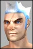
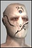
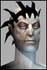
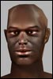
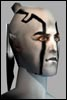

sarv
Phear Leet
 Registered: May 2002
Posts: 162 |  Tir Arena, "Field Commander Wickham" WHY!?!?!? Tir Arena, "Field Commander Wickham" WHY!?!?!?This has been Pissing me of for a while now.
I am omni, and every time i go to Tir arena, Field commander Wickham is there. no, not always, but usualy.
WTF is this guy doing there?
I mean, had it been normal guards! those i can handle.
But this dude hits for 2k and 4k Crits.
Is this just some sick joke from you guys at FC?
"Hey, lets place a Daamn uber NPC just by Tir arena, so he can Gank all the omni's comming there to have fun!!! Wuhaaa, great idea!!!"
Why not just rename him to "Field Commander Wackem" to make the Joke complete! 
Ack...
Just move him already!!!
thx Last edited by Sarv on January 4th, 2003 at 13:35 |
Jekyll
Phear Leet
 Registered: May 2002
Posts: 172 | Actually, it's not FCs fault this time
He usually stands over by the whompas, but sometimes clanners pull him to the arena and then zone into the BY nearby or the little house by the arena, which results in him standing there instead of at the whompas. |
sarv
Phear Leet
Registered: May 2002
Posts: 162 | make him go back to his spot then. as soon as hes not fighting something.
As it is, he stands there for hours. witch is just wrong. |
Insida
Supa Leet
 Registered: Jul 2002
Posts: 540 | yea I petitioned and hes gone now. I just hope FC fix this crap(with the rest of the game). |
stromm
Supa Leet
 Registered: Jul 2002
Posts: 563 | hehe...that biohover guy who always ganks in tir got 'sick of wick'
Went clan, ironically, to gank clanners free of harm
chew on that |
Jankkar
Soleet
 Registered: Oct 2002
Posts: 113 | umm all omni agents going clan? Godly and Bio**** (oops) so far. |
stromm
Supa Leet
Registered: Jul 2002
Posts: 563 | Gotta say though. It's funny how when omni ent guards were placed around the ent grid, omnis told clanners to shut up, and now they're pissed about commander wickham. Both cities should lose the guards imho...Sure you can blitz around the ent guards if you're a fixer or significantly high lvl, but you can't pvp with anyone below 150 in that area, and pvp is already way scarce for that level bracket. All alts just get owned by the guards upon entry. |
iloveposting
Punisher
 Registered: Nov 2002
Posts: 266 | Yeah I changed my pvp lowbie char clan because people kept getting thier 'higher level friends' to pull guards.
Then some other lowbie kept sacraficing his pet to pull it to the arena.
Colamonster and Mmmmmmmbeefy where doing it. do they get warned, noope..they got away.
Its funny what people do when they lose.
You know I was get this smacked infront of me.
Arena is a 0% zone, dont expect not to be ganked, its not for duels or anything.
So, I used to be kind, let people duel, never ganked unless some did it to me.
So, I said **** that and Now on my lowbie char I gank people when they aint looking, I pretend to be afk and let people try to attack me. And sometimes push into peoples fights.
Its kinda funny when people think your looking one way, when infact you have the camera panned around looknig behind you, and theres soom noob looking at you. The amount of times Ive said 'i bet he going to attack me' and it happening is untrue.
My friend sat down in the arena and type /afk.
Ofcourse 5 second later someone attacked her.
Hehe was he asking for it.
Gank 
PS. I had no problem getting into Tir Arena as omni at level 20.
:/ Last edited by Rioko on January 4th, 2003 at 22:15 |


 Anarchy Online Bulletin Board > Game-Play > PvP Conflict > Tir Arena, "Field Commander Wickham" WHY!?!?!?
Anarchy Online Bulletin Board > Game-Play > PvP Conflict > Tir Arena, "Field Commander Wickham" WHY!?!?!? Last Thread Next Thread
Last Thread Next Thread 
 January 4th, 2003 13:22
January 4th, 2003 13:22